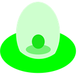
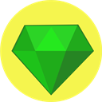
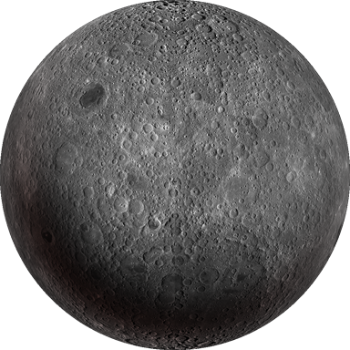
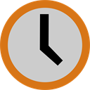

One core round of the flow study: a short practice that estimates the player's level, one game round, a difficulty slider, the arrow task and the Flow Short Scale. To look at a later part on its own, start there. Nothing is stored; the log downloads at the end.

Move your ship with the mouse.

Pick up the crystals. Collect all three to clear a level.

Avoid the bouncing asteroids. If you hit one, the level starts again.
Shield: asteroids can't hurt you for a few seconds.

Clock: slows the asteroids down for a few seconds.
Collect as many crystals as you can.
or press the space bar
A row of five arrows will appear. Look at the middle arrow only and press the key for the way it points. Ignore the other arrows.
Rest your left index finger on F and your right index finger on J. Respond as quickly and as accurately as you can.
or press the space bar